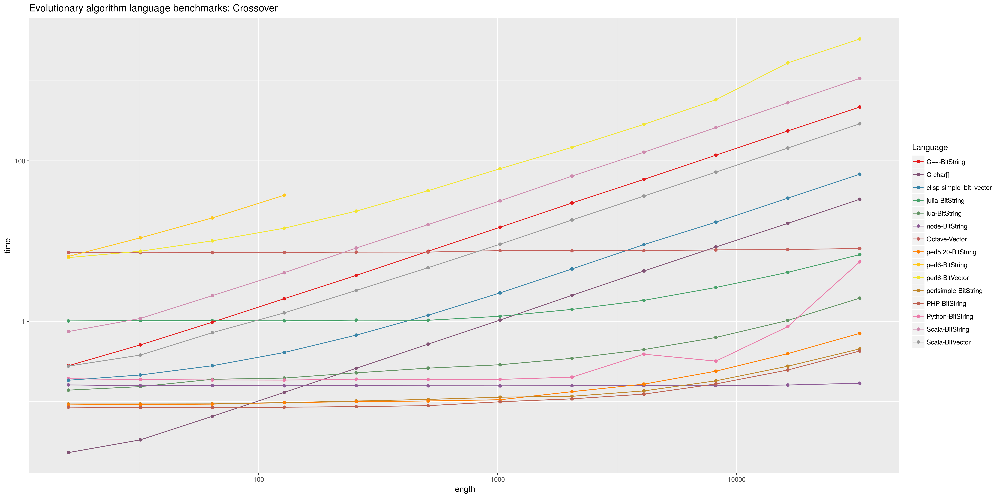
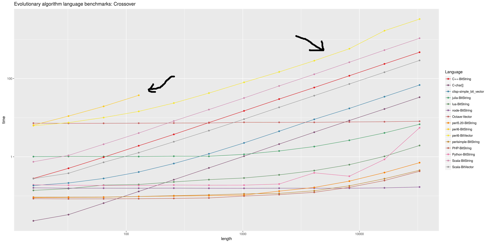
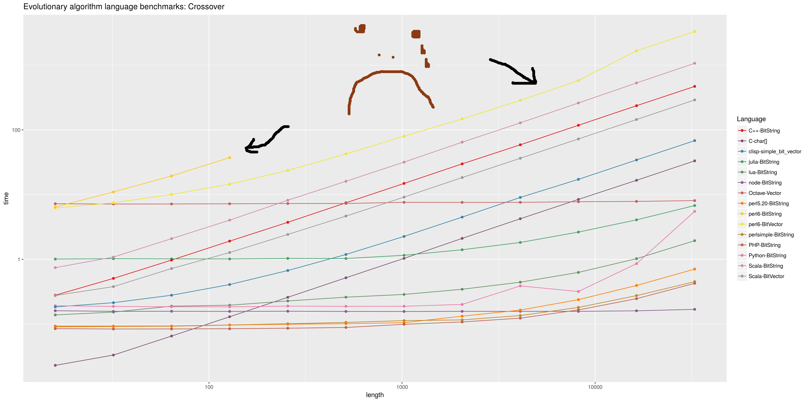

Adventures of an academician in the Perl 6 developers world
Those who know, do
What do we do?
Teaching
Research
Management
Outreach...
Can Perl 5 and Perl 6 help with that?
Can we help Perl 5 and Perl 6 doing that?
Let me tell you the ways
Teach cloud computing
Microservice with Cro
use Cro::HTTP::Server;
use Cro::HTTP::Router;
my %changes;
my $application = route {
put -> {
request-body -> %json-object {
%changes{%json-object<sha1>} = { file => %json-object<file-name>,
adds => %json-object<adds>,
deletes => %json-object<deletes> };
say "Nuevo recurso → ", %changes{%json-object<sha1>}.perl;
created %json-object<sha1>, 'application/json', { status => "OK" }; #Responde con un OK
}
}
}
Set up and start the service
my Cro::Service $service = Cro::HTTP::Server.new(
:host('localhost'), :port(2314), :$application
);
# Run it
$service.start;
# Cleanly shut down on Ctrl-C
react whenever signal(SIGINT) {
$service.stop;
exit;
}
Perl 6 Dockerfiles
FROM alpine:latest
MAINTAINER JJ Merelo <jjmerelo@GMail.com>
WORKDIR /root
ENTRYPOINT ["perl6"]
RUN apk update
RUN apk upgrade
RUN apk add gcc git linux-headers make musl-dev perl
RUN git clone https://github.com/tadzik/rakudobrew ~/.rakudobrew
RUN echo 'export PATH=~/.rakudobrew/bin:$PATH' >> /etc/profile
RUN echo 'eval "$(/root/.rakudobrew/bin/rakudobrew init -)"' >> /etc/profile
ENV PATH="/root/.rakudobrew/bin:${PATH}"
Build stuff
RUN rakudobrew init
#Build moar
RUN rakudobrew build moar
#Build other utilities
RUN rakudobrew build panda
RUN panda install Linenoise
#Mount point
RUN mkdir /app
VOLUME /app
Any question?
Ask not what academia can do for you
But what you can do for academia
Universities are all over the place
They host user groups, communities
They are social learning communities
(a sizeable amount of)
(future) employees, employers, coworkers are there
Keys to Perl's success
Sysadmin
CGI
language(s)
BioPerl
Most of them have the core in higher education centers.
And research centers
What's Perl 6 for?
Benchmarking languages for evolutionary algorithms

It [got better](https://github.com/rakudo/rakudo/issues/1676)
So we'll have to go concurrent
my $pairs = start react whenever $mixer -> @pair {
$to-mix.send( @pair.pick ); # To avoid getting it hanged up
$channel-one.send(mix( @pair[0], @pair[1], $population-size ));
say "Mixing in ", $*THREAD.id;
};